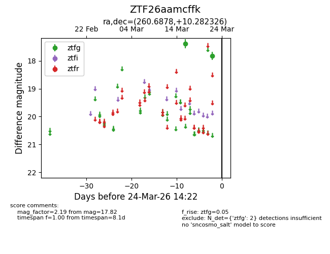
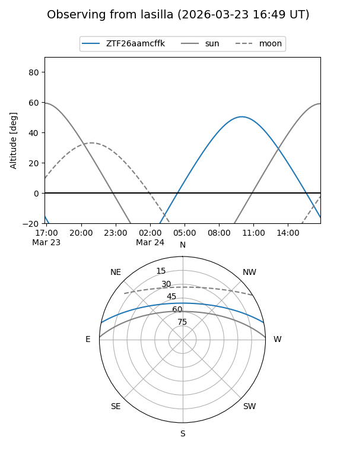
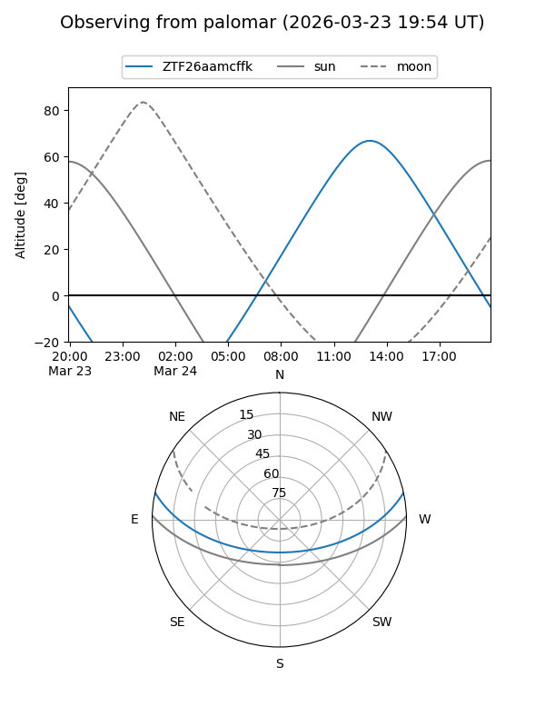

ZTF26aamcffk
Target ZTF26aamcffk at 2026-03-24 14:25
Aliases and brokers:
FINK: link
Lasair: link
ALeRCE: link
alt names
ZTF26aamcffk (ztf,fink_ztf)
Coordinates:
equatorial (ra, dec) = 260.6878,+10.28233
equatorial (HMS+DMS) = 17:22:45.08,+10:16:56.37
galactic (l, b) = (32.2745,+24.32203)
Flags:
Photometry:
last ztfg=17.82
2 ztfg detections
Lightcurve

Visibility


Additional plots